Guide enseignant, exercice par exercice. Chaque exercice a sa fiche : l’extrait du sujet papier, puis une capture annotée pour chaque geste, du bouton « Ajouter un exercice » jusqu’à la publication.
A · Devoir commun · SRIT1Initiation algorithmique30/11/2024 · 2 h · 20 pts
Ex. 1 Simulation (5)
Ex. 2 Dix nombres suivants (5)
Ex. 3 Tarif plein ou réduit (4)
Ex. 4 Le plus grand et sa position (6)
B · Devoir surveillé · M1 MBDSC avancé27/02/2024 · 2 h · 20 pts
Ex. 1 Questions de cours (10)
Ex. 2 Gestion d’un stock (10)
C · Examen 2e session · M1C avancémars 2025 · 2 h · 20 pts
Ex. 1 et 2.1 Programme en 5 fichiers (12)
Ex. 2.2 Commandes de compilation (3)
Ex. 3 QCM (5)
Captures réalisées sur CodEval en octobre 2026, avec le compte de démonstration « Prof Démo ».
Avant de commencer
Lire les captures. Les numéros des pastilles renvoient à la liste sous chaque capture.
1Rouge : ce que vous faites (cliquer, taper, cocher).
2Bleu : ce qu’il faut lire ou vérifier.
3Vert : tout est prêt.
Les quatre étapes d’une épreuve. On les parcourt avec les boutons du bas de l’écran. Une fois l’épreuve enregistrée, le fil des étapes en haut de page permet de revenir en arrière.
2 · ExercicesLe type, l’énoncé, les réponses attendues de chaque exercice.
3 · CorrectionLes jeux de tests des exercices pratiques.
4 · Points & publicationCe que vaut chaque exercice, puis publier.
Il vous faut d’abord une matière (menu Mes matières) — elle fixe le langage : Algorithmique pour Initiation algorithmique, C pour C avancé — et une classe (menu Mes classes), que les étudiants rejoignent avec son code.
7Cette phrase confirme que la copie se compose en blocs de pseudo-code.
8Consignes : recopiez l’en-tête du sujet (ECUE, semestre, parcours, année). L’étudiant les lit avant de commencer.
Laissez Ouverture vide si vous lancerez la session vous-même. Les Modalités de passage (repliées) reprennent vos réglages par défaut.
Enregistrer
9Enregistrer et continuer crée l’épreuve en brouillon et ouvre l’étape 2 « Exercices ».
Exercice 1 · 5 points
Simulation de l’algorithme CalculDeMoyenne
Type : SimulationCorrection : automatique, case par case
Sur le sujet papier
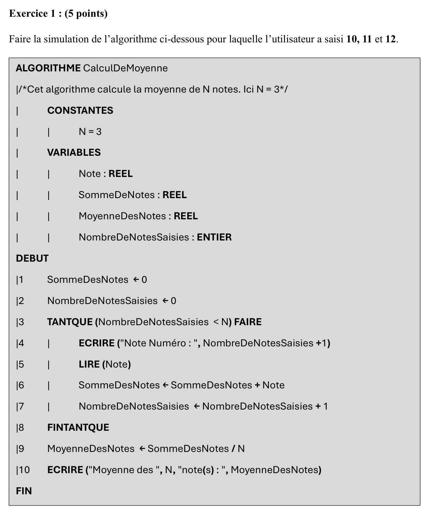
Ajouter l’exercice
1Cliquez sur + Ajouter un exercice, en haut à droite de l’étape 2.
Choisir le type
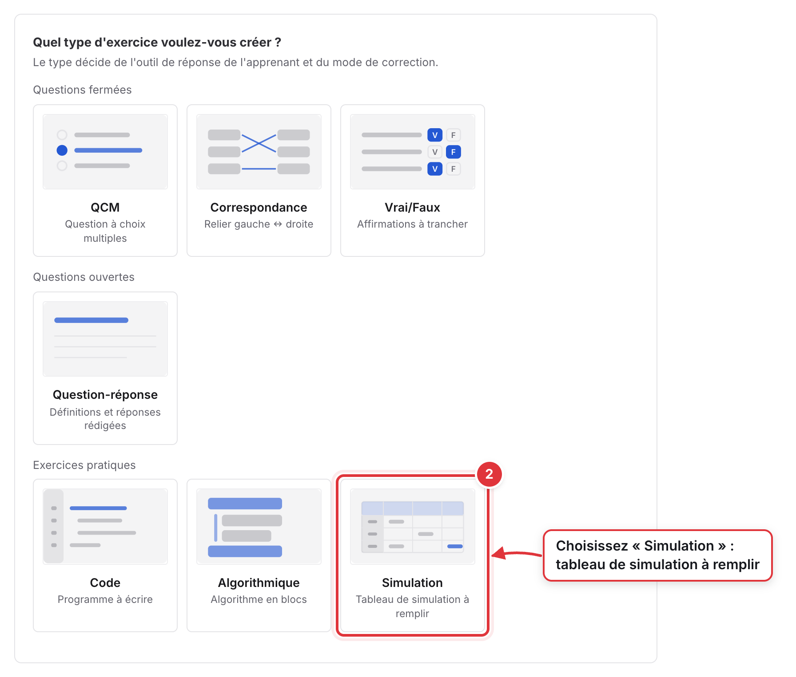
2Cliquez sur la carte Simulation. Le formulaire apparaît en dessous, déjà réglé pour ce type.
L’intitulé et l’énoncé
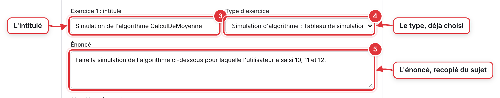
3Intitulé : Simulation de l’algorithme CalculDeMoyenne.
4Le type est déjà rempli. N’y touchez pas : changer de type vide l’exercice.
5Énoncé : « Faire la simulation de l’algorithme ci-dessous pour laquelle l’utilisateur a saisi 10, 11 et 12. »
L’algorithme à simuler
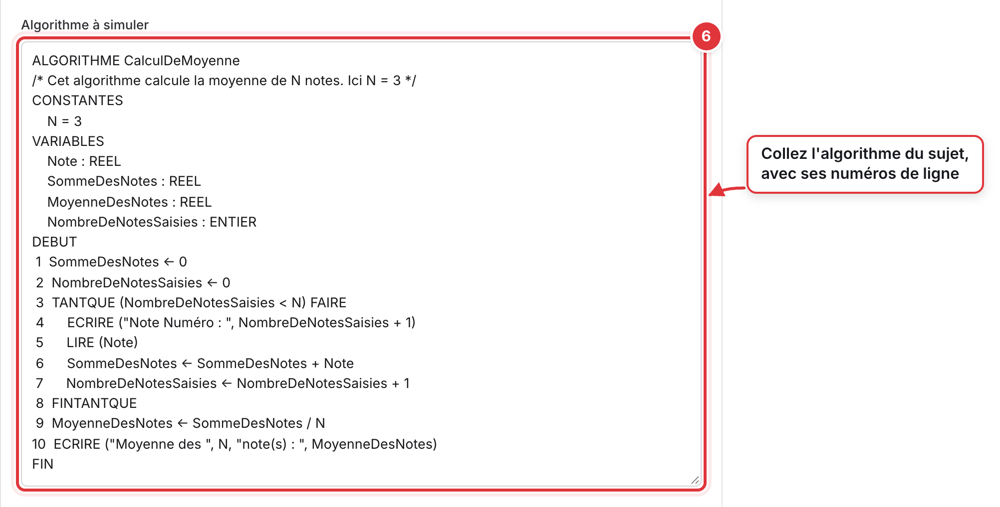
6Copiez-collez l’algorithme du sujet, numéros de ligne compris. Remplacez les barres « | » du document Word par des espaces. Sur la feuille de l’étudiant, il s’affiche en police fixe et coloré.
Le tableau, au départ
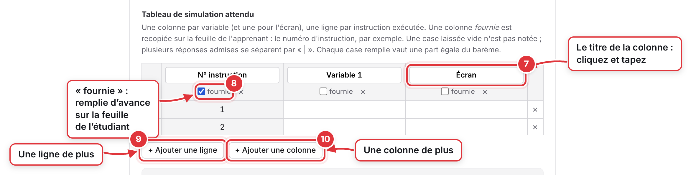
7Cliquez dans le titre d’une colonne pour le changer.
8fournie : la colonne est déjà remplie sur la feuille de l’étudiant et n’est pas notée. Laissez-la cochée pour les numéros d’instruction.
9+ Ajouter une ligne : une ligne par instruction exécutée.
10+ Ajouter une colonne : une colonne par variable, plus la condition et l’écran.
Pour ce sujet : 7 colonnes (N°, Note, SommeDesNotes, NombreDeNotesSaisies, MoyenneDesNotes, Condition (l. 3), Écran) et 20 lignes : instructions 1 et 2, trois tours de boucle (3, 4, 5, 6, 7), le dernier test (3), puis 9 et 10.
Le tableau rempli (partie gauche)
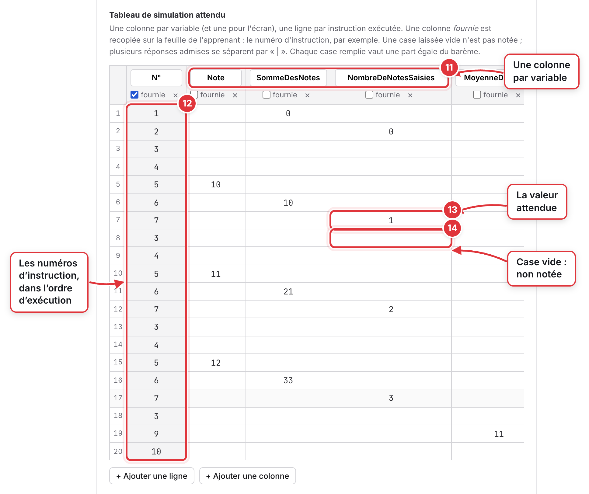
11Les colonnes des variables, nommées comme dans l’algorithme.
12N° : l’ordre d’exécution, recopié sur la feuille de l’étudiant.
13Dans chaque case, la valeur prise par la variable à cette instruction, comme sur votre corrigé papier.
14Une case vide n’est pas notée : l’étudiant peut la laisser vide ou recopier la valeur précédente.
Le tableau rempli (partie droite)
Le tableau défile horizontalement : les dernières colonnes sont à droite.
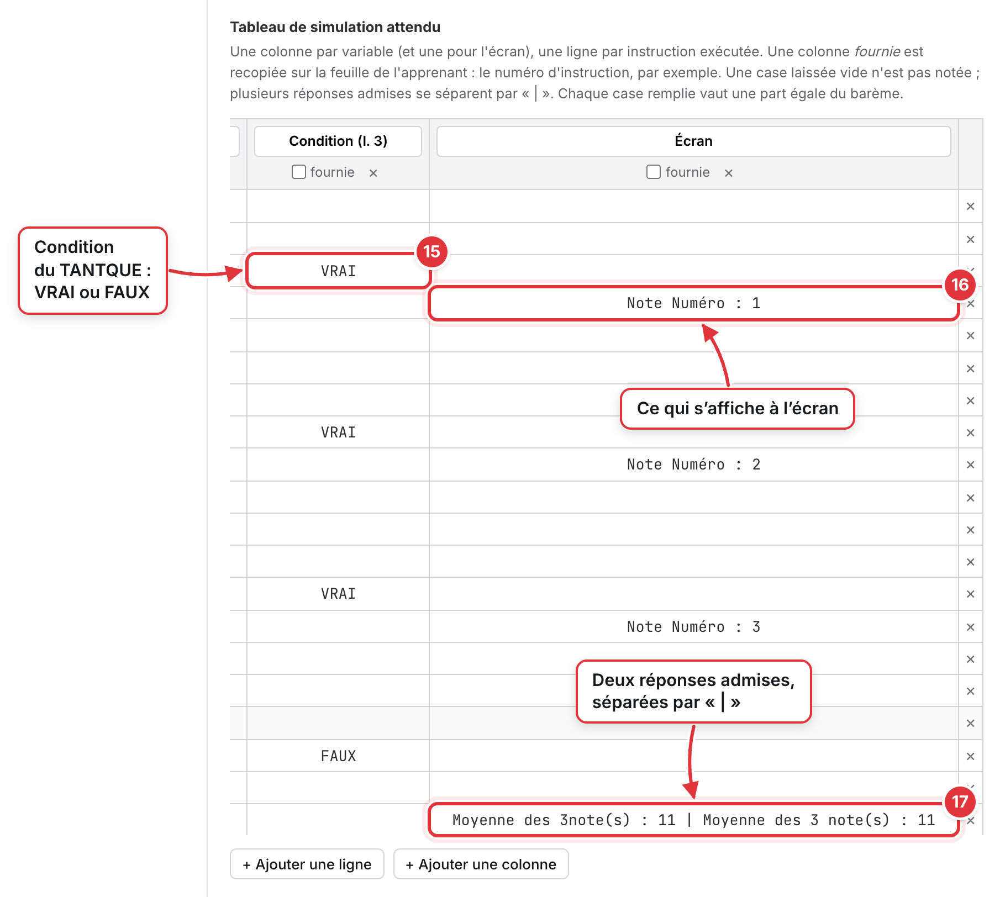
15Condition : VRAI ou FAUX à chaque test du TANTQUE (trois fois VRAI, puis FAUX).
16Écran : le texte affiché par ECRIRE.
17Plusieurs réponses admises : séparez-les par « | ». Ici, avec ou sans espace entre « 3 » et « note(s) ».
Le corrigé (facultatif)
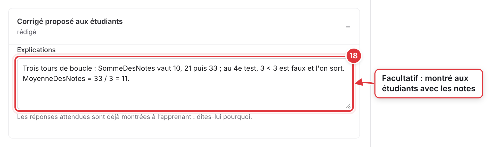
18Ouvrez Corrigé proposé aux étudiants et écrivez l’explication. Les étudiants la voient avec leur note, si l’épreuve propose le corrigé.
Vérifier l’aperçu
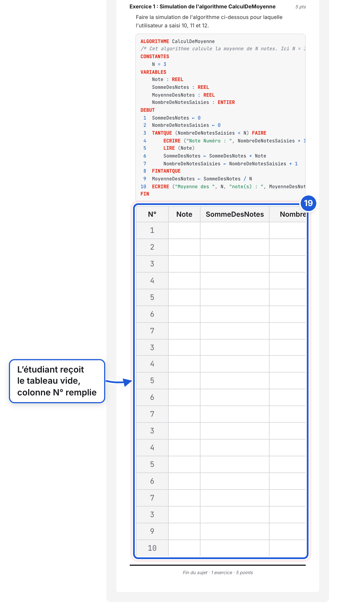
19À droite, l’aperçu montre la feuille de l’étudiant : l’algorithme, puis le tableau vide avec la colonne N° remplie.
Exercice 2 · 5 points
Les dix nombres suivants
Type : AlgorithmiqueCorrection : automatique, par jeux de tests (§ A.5)
Sur le sujet papier
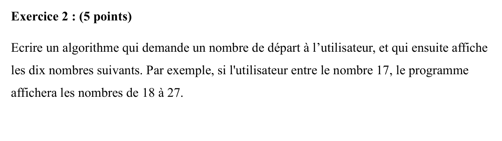
Ajouter l’exercice
1+ Ajouter un exercice. Le nouvel exercice s’ajoute sous le précédent.
Choisir le type
2Cliquez sur Algorithmique.
L’intitulé et l’énoncé
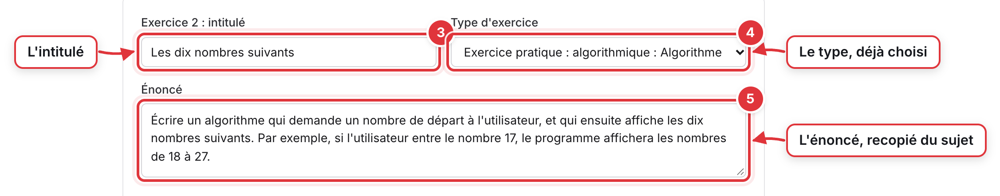
3Intitulé : Les dix nombres suivants.
4Le type, déjà choisi.
5Énoncé : recopiez celui du sujet, exemple compris.
Les outils autorisés
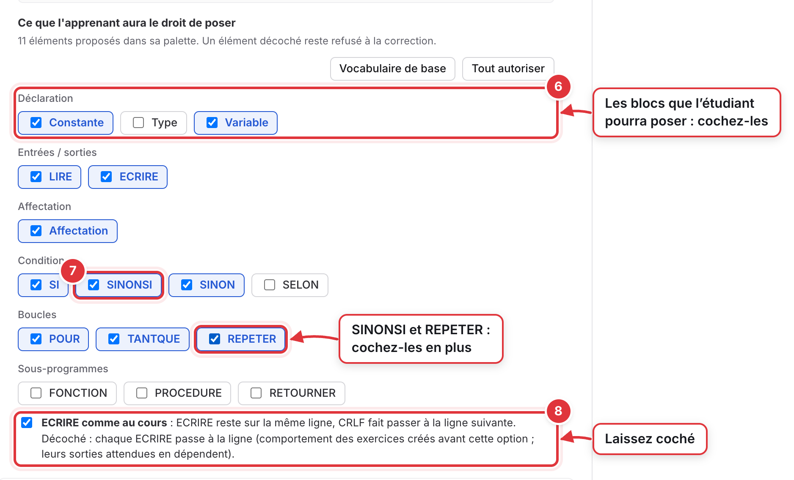
6Les blocs que l’étudiant pourra poser. Le vocabulaire de base est coché d’office : Constante, Variable, LIRE, ECRIRE, Affectation, SI, SINON, POUR, TANTQUE.
7Cochez en plus SINONSI et REPETER s’ils ont été vus en cours. Un bloc décoché est refusé à la correction.
8ECRIRE comme au cours : laissez coché.
Exercice 3 · 4 points
Tarif plein ou réduit
Type : AlgorithmiqueCorrection : automatique, par jeux de tests (§ A.5)
Sur le sujet papier
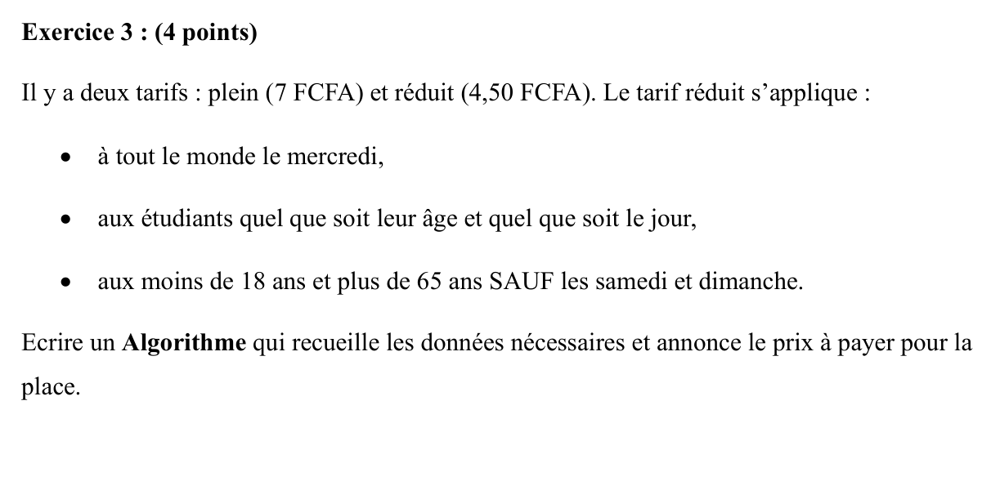
Ajouter
1+ Ajouter un exercice.
Choisir le type
2Algorithmique.
L’intitulé et l’énoncé
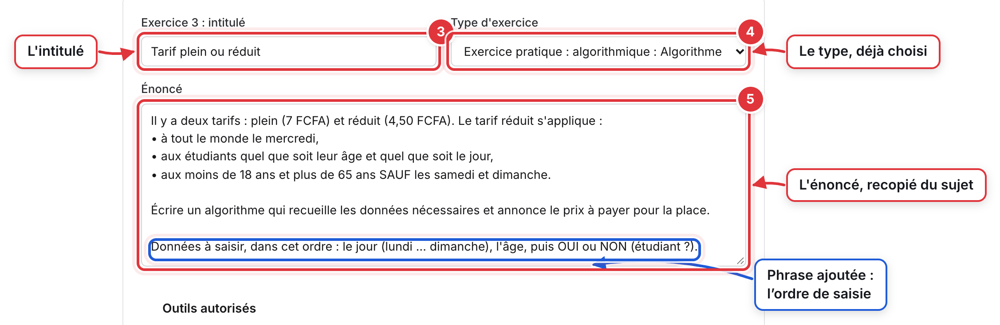
3Intitulé : Tarif plein ou réduit.
4Le type, déjà choisi.
5Énoncé : recopiez le sujet.
!Ajoutez une dernière phrase : « Données à saisir, dans cet ordre : le jour, l’âge, puis OUI ou NON ». Les tests envoient les valeurs dans un ordre fixe : l’étudiant doit les lire dans le même ordre. Les messages affichés restent libres.
Les outils autorisés
6Les mêmes blocs qu’à l’exercice 2.
7SINONSI est utile ici. Cochez aussi REPETER.
8ECRIRE comme au cours : laissez coché.
Exercice 4 · 6 points
Le plus grand nombre et sa position
Type : AlgorithmiqueCorrection : automatique, par jeux de tests (§ A.5)
Sur le sujet papier
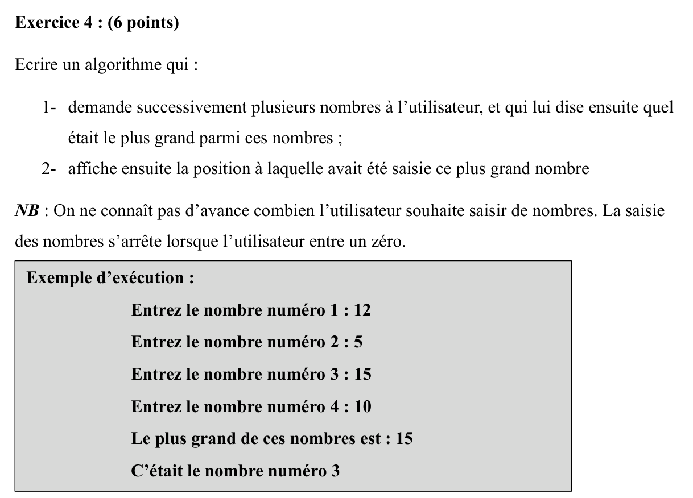
Ajouter
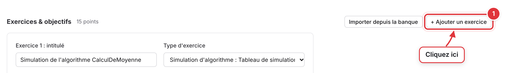
1+ Ajouter un exercice.
Choisir le type
2Algorithmique.
L’intitulé et l’énoncé
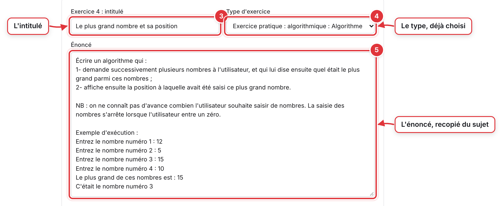
3Intitulé : Le plus grand nombre et sa position.
4Le type, déjà choisi.
5Énoncé : recopiez le sujet, avec le NB et l’exemple d’exécution.
Les outils autorisés
6Les mêmes blocs qu’aux exercices 2 et 3.
7SINONSI et REPETER cochés.
8ECRIRE comme au cours.
Passer à l’étape 3
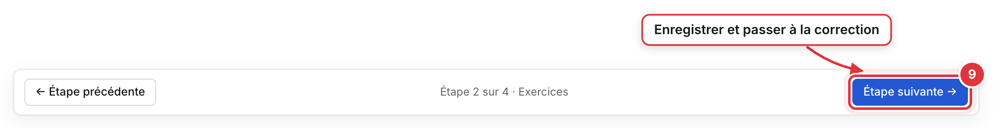
9Étape suivante enregistre les quatre exercices et ouvre l’étape 3 « Correction ».
A.5 Étape 3 « Correction » : les jeux de tests des exercices 2, 3 et 4
Un test fait tourner l’algorithme de l’étudiant avec des valeurs choisies, puis compare ce qu’il affiche à ce que vous attendez. Seuls les exercices pratiques passent par cette étape : la simulation se corrige sur son tableau.
Vue d’ensemble
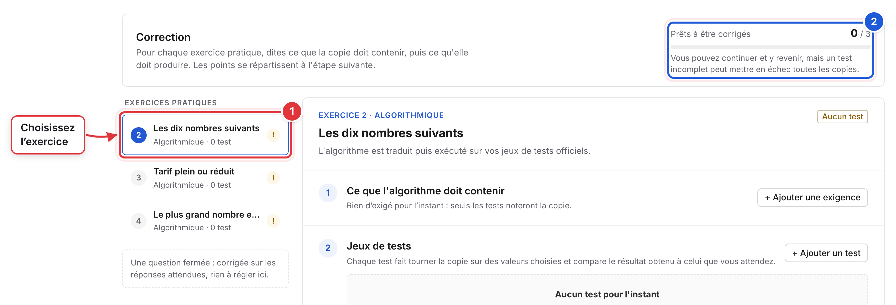
1La colonne de gauche liste les exercices à tester. Cliquez sur celui à régler.
2Le compteur « Prêts à être corrigés » : 0 / 3 au départ.
Exercice 2 — Les dix nombres suivants
Ajouter un test
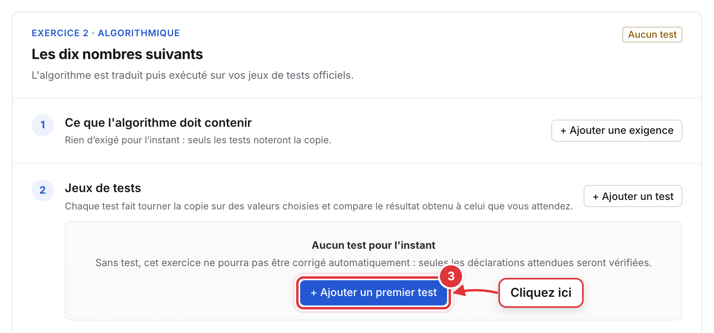
3+ Ajouter un premier test. « Ce que l’algorithme doit contenir » reste vide : seuls les tests notent la copie.
Remplir le test
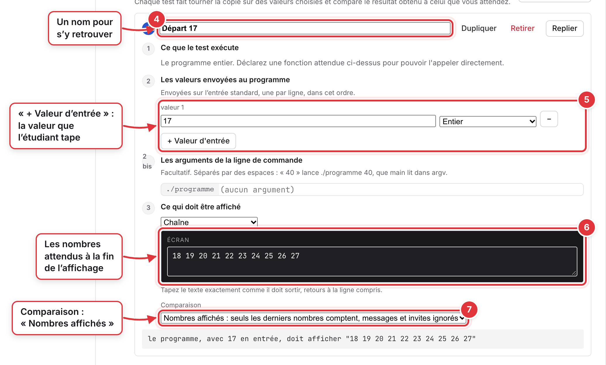
4Nom du test : Départ 17.
5+ Valeur d’entrée, puis la valeur que l’étudiant tape : 17 (type Entier).
6Écran : 18 19 20 21 22 23 24 25 26 27.
7Comparaison : Nombres affichés.
La phrase grise sous le test le résume : relisez-la.
Les autres tests
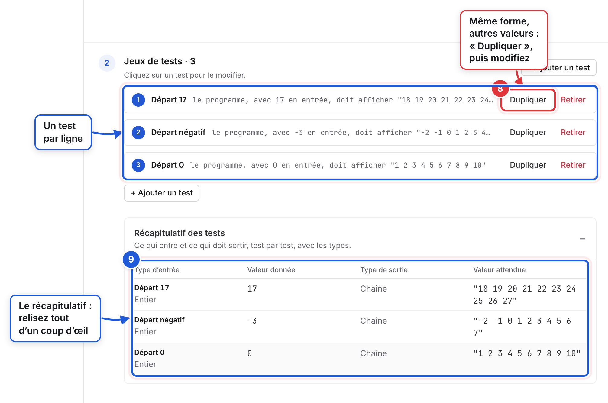
8Dupliquer copie le test : changez le nom, la valeur et le résultat attendu.
9Le Récapitulatif des tests les relit d’un coup d’œil.
Test
Valeur envoyée
Écran attendu
Départ 17
17
18 19 … 27
Départ négatif
-3
-2 -1 0 … 7
Départ 0
0
1 2 … 10
Exercice 3 — Tarif plein ou réduit
Choisir l’exercice
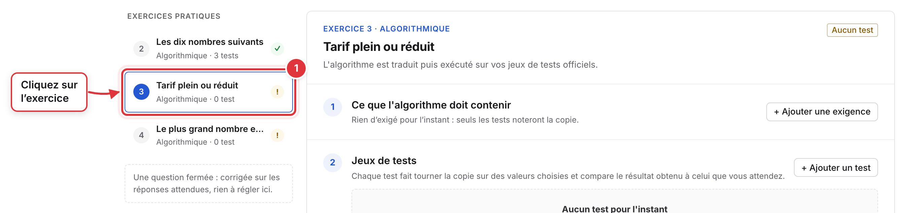
1Cliquez sur Tarif plein ou réduit.
Ajouter un test
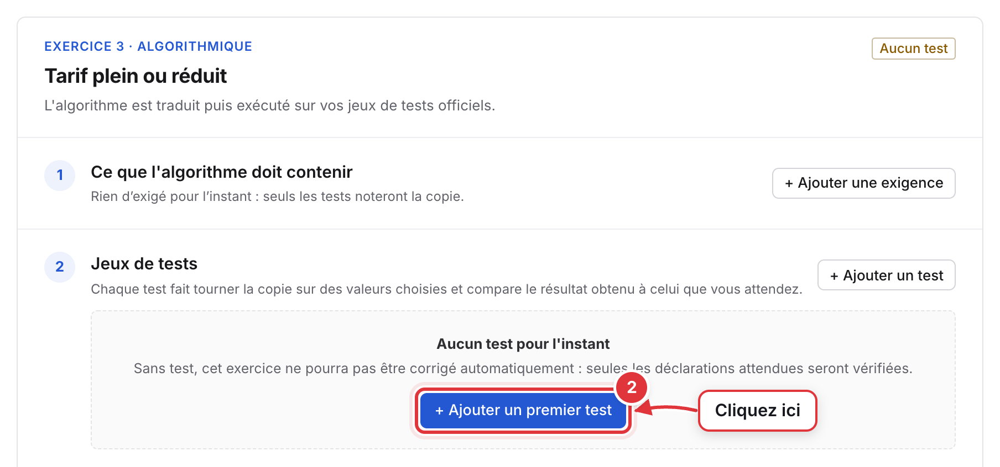
2+ Ajouter un premier test.
Remplir le test
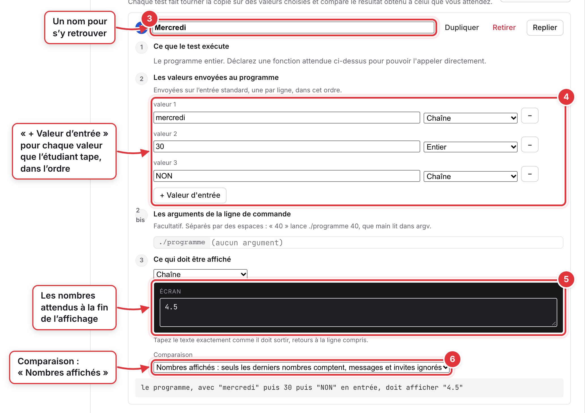
3Nom : Mercredi.
4Trois valeurs, dans l’ordre de l’énoncé : mercredi (type Chaîne), 30 (Entier), NON (Chaîne). Le type se change dans la liste à droite de chaque valeur.
5Écran : 4.5.
6Comparaison : Nombres affichés.
Les cinq tests
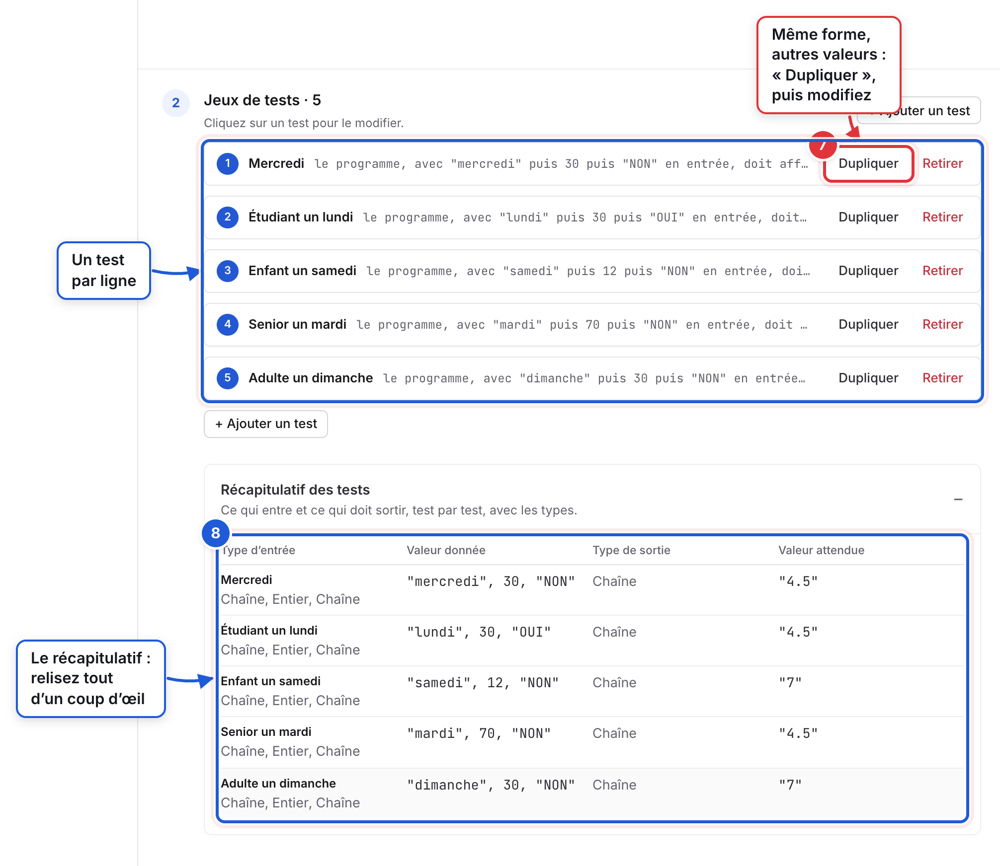
7Dupliquez quatre fois et changez les valeurs.
8Relisez le récapitulatif.
Test
Valeurs envoyées
Écran attendu
Mercredi
mercredi · 30 · NON
4.5
Étudiant un lundi
lundi · 30 · OUI
4.5
Enfant un samedi
samedi · 12 · NON
7
Senior un mardi
mardi · 70 · NON
4.5
Adulte un dimanche
dimanche · 30 · NON
7
Exercice 4 — Le plus grand nombre et sa position
Choisir l’exercice
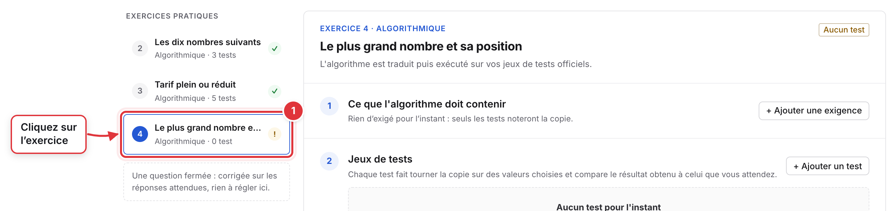
1Cliquez sur Le plus grand nombre et sa position.
Ajouter un test
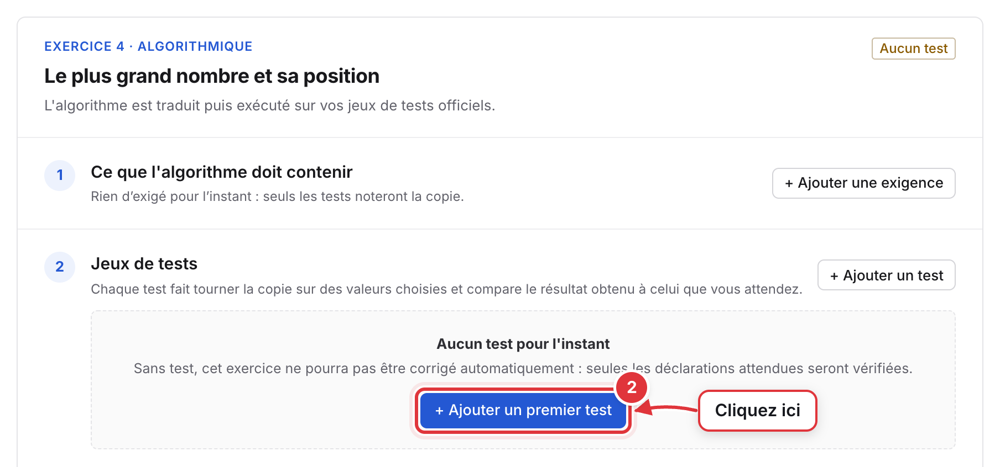
2+ Ajouter un premier test.
Remplir le test
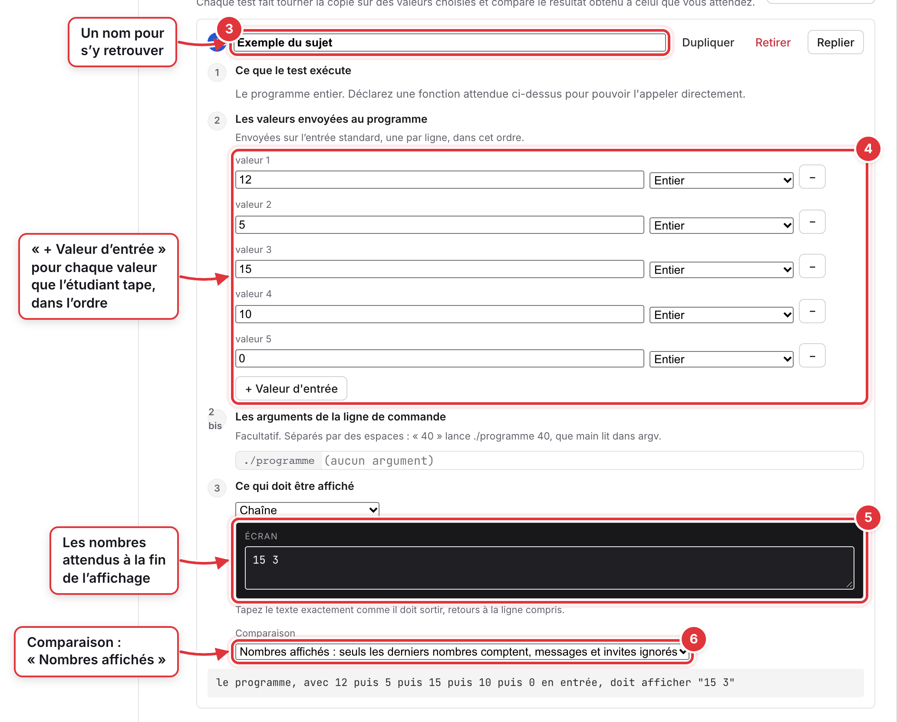
3Nom : Exemple du sujet.
4Cinq valeurs entières : 12, 5, 15, 10, puis 0 qui arrête la saisie.
5Écran : 15 3, le plus grand puis sa position.
6Comparaison : Nombres affichés.
Les trois tests
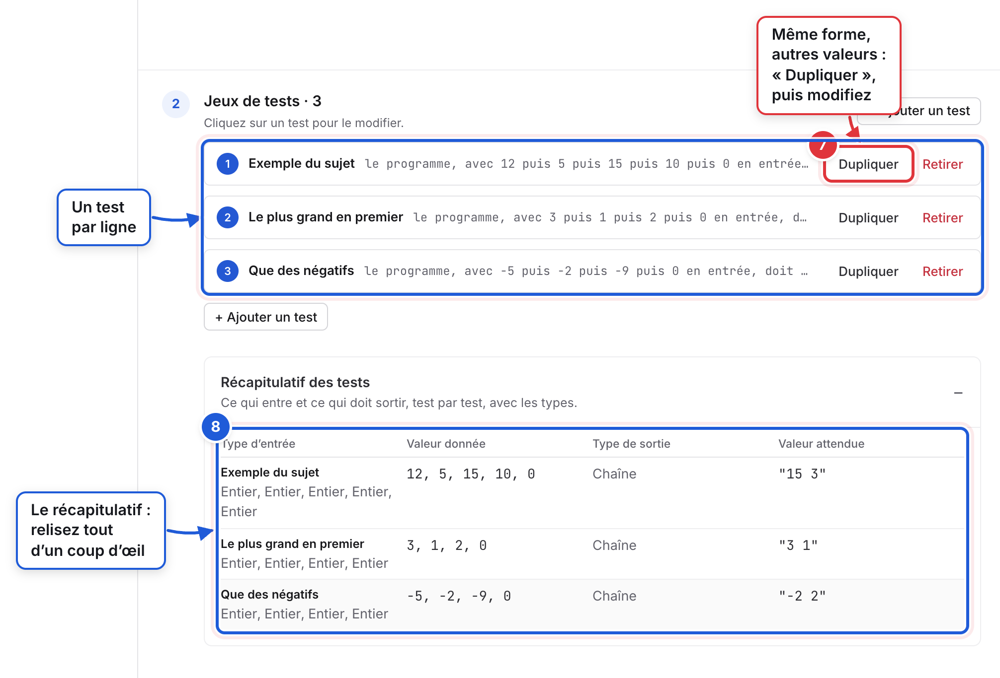
7Dupliquez, puis retirez une valeur avec le bouton − pour les tests plus courts.
8Relisez le récapitulatif.
Test
Valeurs envoyées
Écran attendu
Exemple du sujet
12 · 5 · 15 · 10 · 0
15 3
Le plus grand en premier
3 · 1 · 2 · 0
3 1
Que des négatifs
-5 · -2 · -9 · 0
-2 2
Tout est prêt
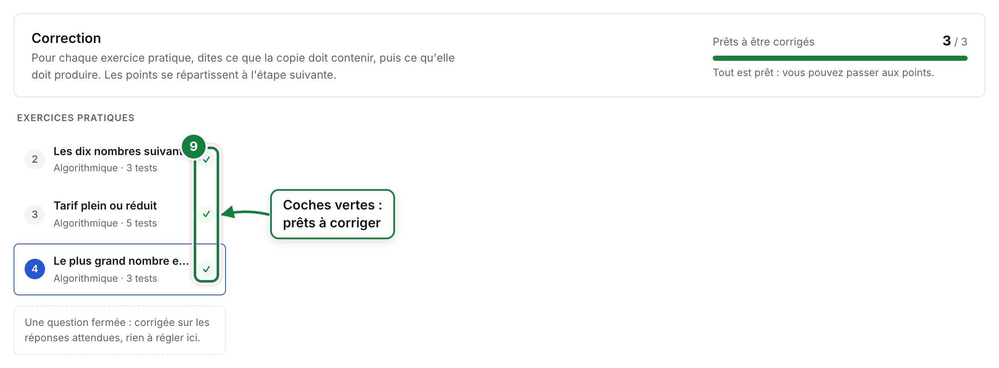
9Les trois exercices sont cochés en vert. Étape suivante ouvre les points.
A.6 Étape 4 « Points & publication »
Les points
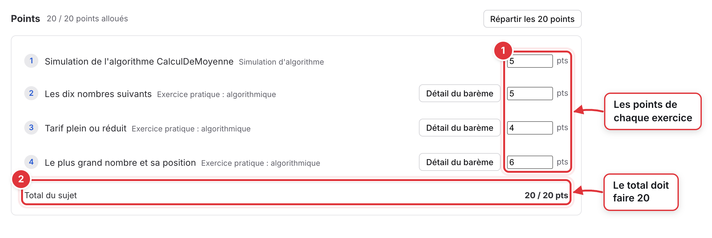
1À l’arrivée, CodEval partage les 20 points à parts égales. Corrigez : 5, 5, 4, 6.
2Le total doit faire 20 / 20.
Publier
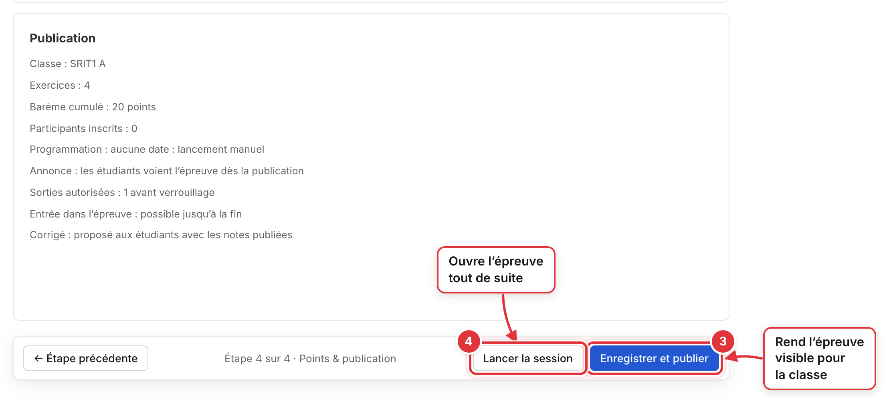
3Enregistrer et publier : l’épreuve apparaît chez les étudiants de la classe, qui composeront une fois la session lancée. Avec une date d’ouverture, le bouton devient « Enregistrer et programmer ».
4Lancer la session ouvre l’épreuve tout de suite.
B
Devoir surveillé de C avancé
M1 MBDS · 27/02/2024 · 2 h · 20 points
B.0 Créer l’épreuve (étape 1 « Paramètres »)
Sur le sujet papier
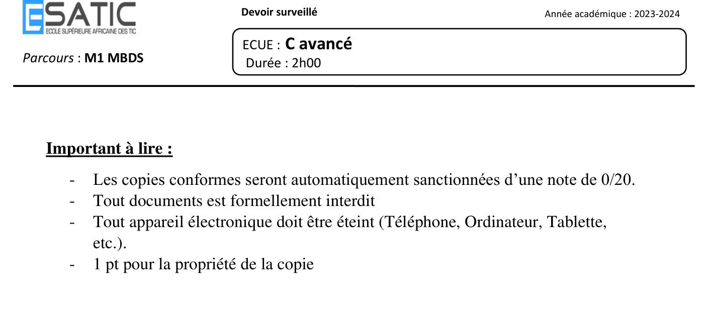
Le titre et le type
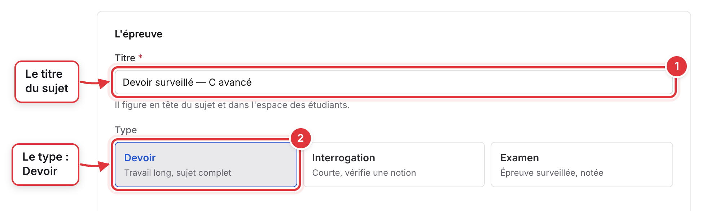
1Titre : Devoir surveillé — C avancé.
2Type : Devoir.
La classe et la matière
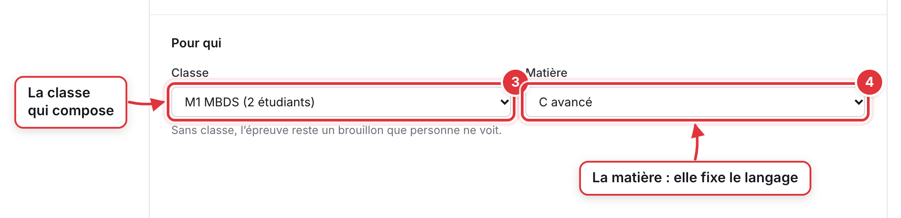
3Classe : M1 MBDS.
4Matière : C avancé. Elle fixe le langage : C.
La durée, le barème et les consignes
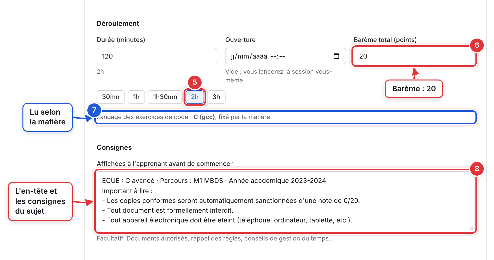
5Durée : 2h.
6Barème : 20.
7Le langage des exercices de code : C, fixé par la matière.
8Consignes : l’en-tête et le bloc « Important à lire ».
Enregistrer
9Enregistrer et continuer.
Exercice 1 · 10 points
Questions de cours
Type : Question-réponseCorrection : mots-clés (question 1) et correction à la main (questions 2 à 6)
Sur le sujet papier
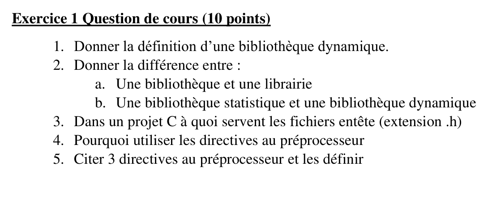
Ajouter
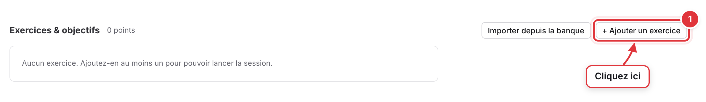
1+ Ajouter un exercice.
Choisir le type
2Question-réponse.
L’intitulé
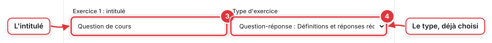
3Intitulé : Question de cours.
4Le type, déjà choisi.
Pas de champ « Énoncé » : avec ce type, chaque question porte son propre texte.
La question 1, notée sur mots-clés
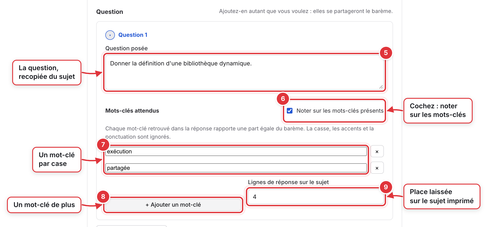
5Question posée : « Donner la définition d’une bibliothèque dynamique. »
6Cochez Noter sur les mots-clés présents : chaque mot-clé retrouvé dans la réponse rapporte sa part.
7Les mots-clés : exécution, partagée. Majuscules, accents et ponctuation sont ignorés.
8+ Ajouter un mot-clé pour chacun.
9Lignes de réponse sur le sujet : la place laissée sur la version imprimée.
Les questions suivantes
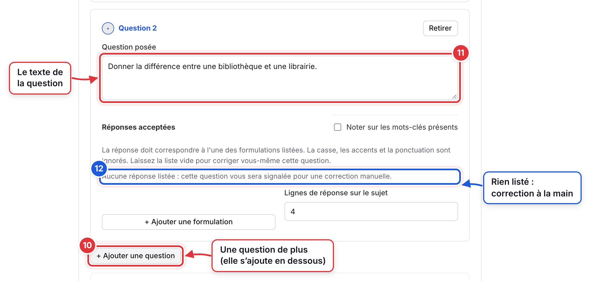
10+ Ajouter une question : elle s’ajoute en dessous, ouverte.
11Question 2 : « Donner la différence entre une bibliothèque et une librairie. »
12Aucune réponse listée : vous la corrigerez à la main.
Les six questions
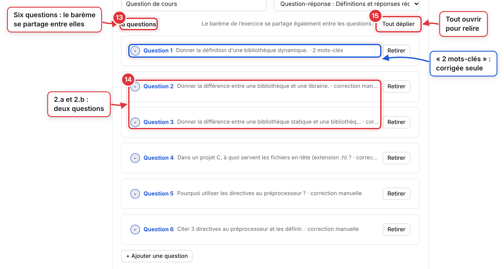
13Six questions : les 10 points se partagent également entre elles.
14Les sous-questions 2.a et 2.b deviennent deux questions séparées.
15Tout replier / Tout déplier pour relire.
N°
Question
Correction
1
Donner la définition d’une bibliothèque dynamique.
mots-clés : exécution, partagée
2
Différence entre une bibliothèque et une librairie.
à la main
3
Différence entre une bibliothèque statique et une bibliothèque dynamique.
à la main
4
Dans un projet C, à quoi servent les fichiers en-tête (.h) ?
à la main
5
Pourquoi utiliser les directives au préprocesseur ?
à la main
6
Citer 3 directives au préprocesseur et les définir.
à la main
Le corrigé (facultatif)
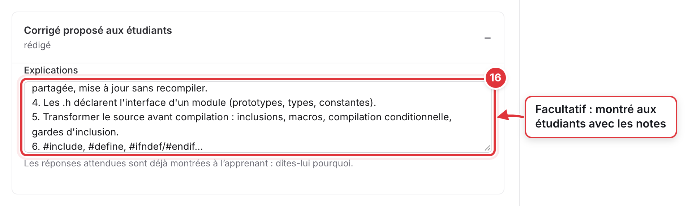
16Les réponses attendues, montrées aux étudiants avec les notes.
1Aucun exercice pratique : passez directement à l’étape suivante.
Les points
110 et 10.
2Total : 20 / 20.
Publier
3Enregistrer et publier.
4ou Lancer la session.
C
Examen 2e session de C avancé
M1 MBDS, BIHAR, SIGL · mars 2025 · 2 h · 20 points
C.0 Créer l’épreuve (étape 1 « Paramètres »)
Sur le sujet papier
Le titre et le type
1Titre : Examen 2e session — C avancé.
2Type : Examen.
La classe et la matière
3Classe : M1 MBDS.
4Matière : C avancé.
La durée, le barème et les consignes
52h.
620.
7Langage : C.
8L’en-tête du sujet.
Enregistrer
9Enregistrer et continuer.
Exercices 1 et 2.1 · 12 points
Le programme modulaire en cinq fichiers
Type : Code (plusieurs fichiers)Correction : automatique : déclarations attendues et tests (§ C.4)
Sur le sujet papier
Ajouter
1+ Ajouter un exercice.
Choisir le type
2Code.
L’intitulé et l’énoncé
3Intitulé : Exercices 1 et 2.1 — Programme modulaire : moyenne d’une classe.
4Le type, déjà choisi.
5Énoncé : le texte commun du sujet, les questions 1, 2 et 2.1, puis ce que la correction doit connaître : les signatures exactes, le nombre d’étudiants lu dans argv[1], une ligne « matricule nom note » par étudiant.
Passer en projet
6Ouvrez Code de départ.
7Choisissez Plusieurs fichiers (projet : .h et .c).
Les cinq fichiers
8Renommez les fichiers dans l’ordre des onglets : Etudiant.h, Note.h, Fonctions.h, Fonctions.c, main.c.
9Code de départ : laissez vide, l’étudiant écrit tout.
10+ Fichier : le projet naît avec trois fichiers, ajoutez les deux autres.
11La correction compile tous les fichiers .c ensemble.
Le corrigé (facultatif)
12La solution type : le contenu des cinq fichiers.
Exercice 2.2 · 3 points
Les commandes de compilation
Type : Question-réponseCorrection : automatique, sur mots-clés
Sur le sujet papier
Ajouter
1+ Ajouter un exercice.
Choisir le type
2Question-réponse.
L’intitulé
3Intitulé : Exercice 2.2 — Les commandes de compilation.
4Le type, déjà choisi.
La question
5La question, avec la commande c:> ProgrammeMoyenne.exe 40.
6Cochez Noter sur les mots-clés présents.
7Les quatre mots-clés : Fonctions.c, main.c, Fonctions.o, -o ProgrammeMoyenne.exe.
Exercice 3 · 5 points
QCM
Type : QCMCorrection : automatique
Sur le sujet papier
Ajouter
1+ Ajouter un exercice.
Choisir le type
2QCM.
L’intitulé
3Intitulé : Exercice 3 — QCM.
4Le type, déjà choisi.
La question 1
5La question.
6Les quatre propositions, sans « a) » devant : l’étudiant les verra dans un ordre mélangé.
7Cochez la bonne réponse.
8Deux choix au départ : + Ajouter un choix deux fois.
9Plusieurs réponses possibles : laissez décoché.
Les questions 2 à 5
10+ Ajouter une question pour chacune.
11Question 5 : dans le PDF, les propositions b) et c) sont collées sur une ligne. Saisissez-les comme deux choix.
Les cinq questions
12Cinq questions : 1 point chacune.
Question
Bonne réponse
1. Fonction d’une directive de préprocesseur
a) Modifier le code source avant la compilation
2. Première étape de la compilation
c) Le prétraitement
3. Bibliothèques dynamiques
b) Réduire la taille des exécutables en partageant du code
4. Statique / dynamique
c) Statique intégrée à l’exécutable, dynamique chargée à l’exécution
5. Mauvais lien vers une bibliothèque dynamique
b) Le programme risque de planter
C.4 Étape 3 « Correction » : le programme en cinq fichiers
L’exercice de code se corrige de deux façons : les déclarations que la copie doit contenir (structures, fonctions avec leur signature), puis les tests qui compilent et lancent le programme entier.
Vue d’ensemble
1Le seul exercice pratique de l’examen.
2Questions et QCM : rien à régler ici.
Ajouter une déclaration
3Cliquez sur + Ajouter une déclaration, puis Structure attendue pour Note et Etudiant.
4Fonction attendue pour les trois fonctions.
Les structures
5Le nom de la structure : Note.
6Le champ note, de type Décimal simple précision (float). Un champ existe déjà : + Champ en ajoute d’autres.
7Pour Etudiant, le champ note est de type Autre type : écrivez Note, comme en C.
8La déclaration telle qu’elle sera cherchée dans la copie.
11+ Paramètre : ValeurNote (Décimal simple précision), puis UnEtudiant.
12UnEtudiant : Autre type, puis Etudiant *.
13La signature vérifiée à la compilation.
Les deux autres fonctions
14float MoyenneNotes(Etudiant *TabEtudiants, int n).
15void AfficherTout(Etudiant *TabEtudiants, int n).
Ajouter un test
16+ Ajouter un premier test. Les fonctions reçoivent un Etudiant * : un test ne peut pas les appeler seules, il lance le programme entier.
Remplir le test
17Le test compile tous les fichiers et lance le programme.
18Trois valeurs de type Chaîne, une par étudiant : E001 Kone 12, E002 Yao 16, E003 Traore 11.
19Arguments de la ligne de commande : 3. Il remplace le 40 de ProgrammeMoyenne.exe 40.
20Écran : 13, la moyenne (12 + 16 + 11) / 3.
21Comparaison : Nombres affichés. Seule la moyenne, dernière valeur affichée, est vérifiée : la présentation de la liste reste libre.
Les deux tests
22Dupliquez pour un second test : argument 1, valeur E010 Awa 20, écran 20.
C.5 Étape 4 « Points & publication »
Les points
112, 3 et 5.
2Total : 20 / 20.
Le détail du barème de l’exercice 1
3Cliquez sur Détail du barème.
4Cochez Peser chaque ligne moi-même. Sinon, les 12 points se partagent à parts égales entre les sept lignes.
5Note 2, Etudiant 2, AjouterNote 1, MoyenneNotes 0,5, AfficherTout 0,5 : 6 points de déclarations. Puis 3 + 3 points de tests.
6Le barème de l’exercice : 12 / 12.
Publier
7Enregistrer et publier.
8ou Lancer la session.
Aide-mémoire
Type
Ce que vous saisissez
Comment c’est corrigé
Simulation
L’algorithme, le tableau attendu (colonnes, lignes), les colonnes fournies
Case par case ; case vide non notée ; « | » pour plusieurs réponses
Algorithmique
L’énoncé, les blocs autorisés, puis les tests à l’étape 3
Exécution sur les tests ; « Nombres affichés » ignore les messages
Code
L’énoncé, les fichiers du projet, puis déclarations et tests à l’étape 3
Déclarations cherchées dans tous les fichiers ; programme compilé et lancé
Question-réponse
Une question par point du sujet ; mots-clés ou formulations, ou rien
Mots-clés : une part par mot présent ; rien : correction à la main
QCM
Les questions, leurs propositions, la bonne réponse cochée
Automatique ; propositions mélangées pour l’étudiant
Avant de publier
La classe est choisie à l’étape 1, sinon l’épreuve reste un brouillon invisible.
Chaque exercice pratique est coché en vert à l’étape 3.
L’ordre de saisie des données est écrit dans l’énoncé quand il y en a plusieurs.
Le total des points fait 20 à l’étape 4.
L’aperçu, à droite de l’étape 2, montre le sujet tel que l’étudiant le recevra.
Après l’épreuve
À la clôture, lancez la correction. Les questions sans réponse listée vous sont signalées pour une correction à la main. Sur chaque copie, Modifier la note de cet exercice permet un ajustement (le point de propreté, par exemple), enregistré avec son motif. Publiez ensuite les résultats : les étudiants voient leur copie annotée et, si l’épreuve le propose, le corrigé.
Réutiliser un exercice. « Enregistrer dans la banque », sous chaque exercice, le range dans votre banque. Il se retrouve ensuite avec « Importer depuis la banque » dans une autre épreuve.